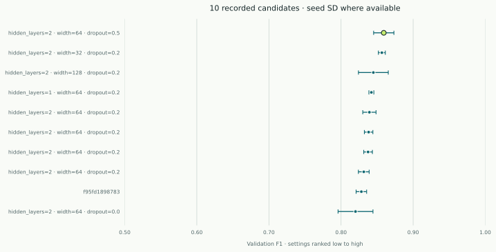

TEST RANKING
Neural network · frozen designated fit · seed 43
Multilayer perceptron
Nine one-factor settings plus one combined setting, each trained with three seeds. Winner: 2 hidden layers × 64 units, dropout 0.5, learning rate 0.001, weight decay 0.01.
Validation F10.8750
Test F10.838295% group CI 0.719–0.907
ROC AUC0.9762
Precision / recall0.873 / 0.806
False-alarm rate1.584%
Validation search · 10 recorded candidates
How the winner emerged.
Chart form follows the recorded search: parameter maps for complete grids, response curves for ordered sweeps, and ranked dot plots when settings vary across several dimensions. The held-out test did not choose these settings.
Candidate settings · validation onlyWinner marked in lime · seed SD shown where recorded

| Rank | Recorded setting | Mean validation F1 | Seed SD | Seeds |
|---|---|---|---|---|
| 01 | {"hidden_layers":2,"width":64,"dropout":0.5,"learning_rate":0.001,"weight_decay":0.01} | 0.8592 | 0.0141 | 3 |
| 02 | {"hidden_layers":2,"width":32,"dropout":0.2,"learning_rate":0.001,"weight_decay":0.01} | 0.8566 | 0.0048 | 3 |
| 03 | {"hidden_layers":2,"width":128,"dropout":0.2,"learning_rate":0.001,"weight_decay":0.01} | 0.8448 | 0.0207 | 3 |
| 04 | {"hidden_layers":1,"width":64,"dropout":0.2,"learning_rate":0.001,"weight_decay":0.01} | 0.8421 | 0.0034 | 3 |
| 05 | {"hidden_layers":2,"width":64,"dropout":0.2,"learning_rate":0.003,"weight_decay":0.01} | 0.8393 | 0.0092 | 3 |
| 06 | {"hidden_layers":2,"width":64,"dropout":0.2,"learning_rate":0.001,"weight_decay":0.001} | 0.8383 | 0.0059 | 3 |
| 07 | {"hidden_layers":2,"width":64,"dropout":0.2,"learning_rate":0.001,"weight_decay":0.1} | 0.8375 | 0.0060 | 3 |
| 08 | {"hidden_layers":2,"width":64,"dropout":0.2,"learning_rate":0.001,"weight_decay":0.01} | 0.8315 | 0.0075 | 3 |
| 09 | f95fd1898783 | 0.8282 | 0.0073 | 3 |
| 10 | {"hidden_layers":2,"width":64,"dropout":0.0,"learning_rate":0.001,"weight_decay":0.01} | 0.8201 | 0.0242 | 3 |
Frozen test scores · 1,506 clips
Score behavior.
The curve is derived from the saved score vector. The confusion matrix starts at the validation-frozen threshold.
POSITIVE CLASS
Precision–recall
DECISION BEHAVIOR
Move the threshold
This reclassifies only the anonymous saved test scores.
CLASS SEPARATION
Test score distribution
Blue: non-drone · coral: drone
Lower scoreHigher score
Matched group comparisons
Against the other finalists.
Intervals crossing zero do not establish a difference or equivalence. Positive values favor this model.
| Compared model | Difference direction | 95% paired CI | Read |
|---|---|---|---|
| Perceptron | Multilayer perceptron − Perceptron (reversed pair) | [+0.049, +0.208] | excludes zero |
| CNN · tuned | Multilayer perceptron − CNN · tuned | [-0.178, -0.032] | excludes zero |
| CNN · clean control | Multilayer perceptron − CNN · clean control | [-0.167, -0.026] | excludes zero |
Compute and lineage
Fit footprint.
Complexity9,665 parameters
Training time4.779 seconds
Final seed43
Frozen threshold1.78693
Test confusion at frozen thresholdTN 1305 · FP 21 · FN 35 · TP 145